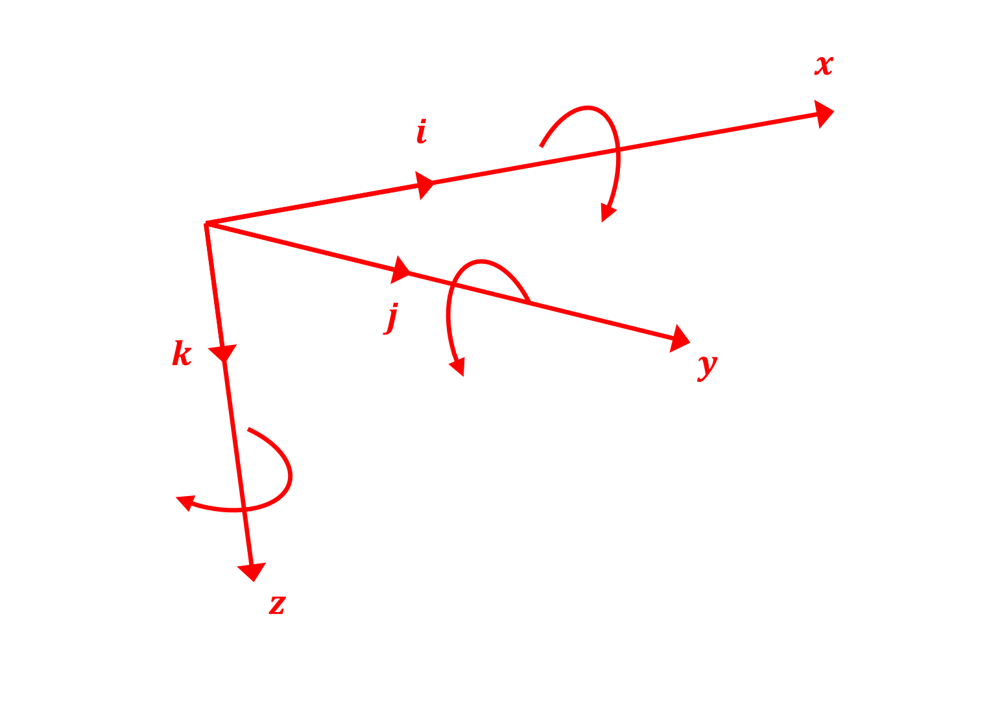

Rigid Body Transformations#
The rotmat module in c4dynamics provides a collection of
functions for defining and exploring the rotation of bodies from
one frame of reference to another.
This page covers the background: what a frame of reference is, the notation c4dynamics uses for rotation matrices, the three representations of an attitude (Euler angles, rotation matrix, quaternion), how to convert between them, and how to rotate vectors from one frame to another.
Background Material#
Reference Frames#
A frame of reference (or a coordinate system) is an origin and three mutually perpendicular unit axes, \(x, y, z\). A physical vector, such as a velocity or a force, exists independently of any frame. Its three components, however, depend on the frame in which it is resolved. A vector resolved in a given frame is said to be expressed in that frame.
For example, an aircraft that flies north at \(150 m/s\) and pitches up by \(30°\) has a single velocity vector. In an earth frame its components are \([150, 0, 0]\), while in the aircraft body frame they are \([129.9, 0, 75]\) (see the examples below).
The rate of change of a vector, as viewed by an observer fixed to and moving with a given frame, is said to be relative to (or with respect to) that frame. The laws of motion hold relative to an inertial frame, but the vectors in them can be expressed in any frame.
The frames that appear throughout c4dynamics:
Symbol |
Frame |
Description |
|---|---|---|
\(R\) |
Reference |
The frame against which the attitude of a body is defined. Usually an inertial earth frame. This is the default frame of the position and the velocity of the state objects (\(x, y, z, v_x, v_y, v_z\)). |
\(I\) |
Inertial |
A reference frame that does not accelerate or rotate. In c4dynamics, \(I\) and \(R\) are used interchangeably when the reference frame is inertial, e.g. in the navigation sensors and the quadcopter model. |
\(B\) |
Body |
A frame fixed to the body and rotating with it. The origin is at the center of mass and \(x_b\) is along the centerline (the nose). The body angular rates \((p, q, r)\) and the body velocity \((u, v, w)\) are expressed in this frame. |
\(S\) |
Sensor |
A frame fixed to a sensor, such as a |
Two pairs of an inertial frame and a body frame are common for vehicles that fly
above a flat earth.
Both are supported by the quadcopter model and the navigation sensors through the
frame argument (see Quadcopter Equations of Motion):
|
Inertial frame |
Body frame |
|---|---|---|
|
\(x\) north, \(y\) east, \(z\) down |
\(x\) forward, \(y\) right, \(z\) down (FRD) |
|
\(x\) east, \(y\) north, \(z\) up |
\(x\) forward, \(y\) left, \(z\) up (FLU) |
Right Hand Frame#
The positive directions of coordinate system axes and the directions of positive rotations about the axes are arbitrary. In right-handed systems:
i x j = k
j x k = i
k x i = j
where i is the unit vector in the direction of the x-axis, j is the unit vector in the direction of the y-axis, k is the unit vector in the direction of the z-axis.
Positive rotations are clockwise when viewed from the origin, looking out along the positive direction of the axis.
These conventions are illustrated in Fig-1.

Fig-1: Coordinate System Conventions#
Rotation Matrix Notation#
Vectors that are expressed in different frames are related through a Direction Cosine Matrix (DCM), a \(3 \times 3\) rotation matrix. [HS]
c4dynamics names a rotation matrix by two letters in square brackets. The letters state the direction of the transformation, read from right to left:
\([BR]\) (Body from Reference) takes a vector that is expressed in \(R\) and returns the same vector expressed in \(B\):
The same notation applies to any pair of frames, for example:
\([BR]\) |
Body from Reference. Provided by
|
\([RB]\) |
Reference from Body. Provided by
|
\([BI]\) |
Body from Inertial, used in the IMU, the magnetometer, and the quadcopter model |
\([SB]\) |
Sensor from Body, e.g. the gimbal of a seeker |
Direction cosines. The element \([BR]_{ij}\) is the cosine of the angle between the \(i\)-th axis of \(B\) and the \(j\)-th axis of \(R\). Hence the rows of \([BR]\) are the body axes expressed in \(R\), and its columns are the reference axes expressed in \(B\).
Inverse. A rotation matrix is orthonormal, \([BR] \cdot [BR]^T = I_3\), and its determinant is \(+1\). Its inverse is its transpose, which is the transformation in the opposite direction:
Composition. A chain of transformations is composed by cancelling adjacent letters. For three frames \(A, B, C\):
For example, a seeker that is mounted on a gimbal sees the reference frame through \([SR] = [SB] \cdot [BR]\).
Passive rotation. The rotation matrices in c4dynamics are passive: they rotate the frame of coordinates rather than the vector. The vector itself is unchanged; only the frame in which its components are expressed changes. To rotate a vector actively by a positive angle within the same frame, use the transpose. E.g. \(R_z(\psi)^T \cdot v\) rotates \(v\) by \(\psi\) about \(z\).
Elementary Rotations#
A rotation of a frame through an angle about one of its axes is given by an elementary rotation matrix:
These are implemented by rotx,
roty, and
rotz.
Any attitude is reached by a sequence of three elementary rotations.
Euler Angles Order#
When Euler angles are employed in the transformation of a vector expressed in one reference frame to the expression of the vector in a different reference frame, any order of the three Euler rotations is possible, but the resulting transformation equations depend on the order selected. [MIs]
In aerospace applications for example, the common order is that the first Euler rotation is about the z-axis, the second is about the y-axis, and the third is about the x-axis. Such a transformation order is called z-y-x, or 3-2-1. With reference to a body orientation, the resulting order is yaw, pitch, and roll. With reference to geographical orientation, the resulting order is azimuth (heading), elevation (pitch), and roll (bank angle).
c4dynamics adopts the 3-2-1 order. Starting with the body frame aligned with the reference frame:
Rotate about \(z_b\) through the yaw (heading) angle \(\psi\),
Rotate about \(y_b\) through the pitch angle \(\theta\),
Rotate about \(x_b\) through the roll angle \(\varphi\).
The first rotation is the rightmost in the product:
where \(c \equiv cos\) and \(s \equiv sin\).
This matrix is computed by dcm321.
The Euler angles are extracted back from the matrix by:
The 3-2-1 Euler angles are singular at \(\theta = \pm 90°\) (gimbal lock), where \(\varphi\) and \(\psi\) are not uniquely defined.
Quaternions#
A rotation can also be represented by a unit quaternion. According to Euler’s rotation theorem, any orientation is reached from the reference frame by a single rotation through an angle \(\alpha\) about a unit axis \(n\). The attitude quaternion stores this rotation, scalar first:
Unlike the three Euler angles, the quaternion has no singular attitude, which makes it the representation of choice for vehicles that may reach any attitude. \(q\) and \(-q\) describe the same rotation.
In c4dynamics, a quaternion describes the same attitude as the 3-2-1 Euler angles
\((\varphi, \theta, \psi)\) of the convention above,
and the Body from Reference DCM computed from the quaternion is identical to
dcm321 of those angles.
The quatbody state object
carries its attitude as such a quaternion. For the quaternion kinematics, see the
Kinematics concept page.
Converting Between Representations#
An attitude has three equivalent representations in c4dynamics.
The functions of the rotmat module convert between them:
From \ To |
Euler angles \((\varphi, \theta, \psi)\) |
DCM \([BR]\) |
Quaternion \(q\) |
|---|---|---|---|
Euler angles |
- |
||
DCM |
|
- |
|
Quaternion |
- |
Notes:
All the functions take and return angles in radians, except
dcm321euler, which returns degrees.All the matrices are \([BR]\). To get \([RB]\), transpose the result.
A conversion that passes through the Euler angles inherits their singularity at \(\theta = \pm 90°\).
Between ENU and NED
The ENU and the NED frames swap \(x\) and \(y\) and flip \(z\). The matrix that does it is its own inverse, so the same matrix converts both ways:
A heading measured from east (ENU) becomes a heading measured from north (NED): \(\psi_{NED} = \pi / 2 - \psi_{ENU}\). This conversion is used at the MAVLink boundary of the ArduPilot simulation.
Examples#
Import c4dynamics and numpy:
>>> import c4dynamics as c4d
>>> import numpy as np
Elementary rotations
A frame that is rotated by \(90°\) about \(z\). The \(x\) axis of the original frame is the \(-y\) axis of the rotated frame:
>>> c4d.rotmat.rotz(90 * c4d.d2r) @ [1, 0, 0]
[0 -1 0]
The transpose rotates the vector itself (active rotation) by \(90°\) about \(z\), from \(x\) to \(y\):
>>> c4d.rotmat.rotz(90 * c4d.d2r).T @ [1, 0, 0]
[0 1 0]
The 3-2-1 matrix is the product of the three elementary rotations:
>>> phi, theta, psi = 10 * c4d.d2r, 20 * c4d.d2r, 30 * c4d.d2r
>>> BR = c4d.rotmat.dcm321(phi, theta, psi)
>>> np.allclose(BR, c4d.rotmat.rotx(phi) @ c4d.rotmat.roty(theta) @ c4d.rotmat.rotz(psi))
True
It is orthonormal, so its transpose is its inverse:
>>> np.allclose(BR @ BR.T, np.eye(3))
True
>>> np.linalg.det(BR)
1
From reference to body and back
The inertial velocity of an aircraft flying north, expressed in an earth frame, and its attitude, a pitch of \(30°\):
>>> v_R = [150, 0, 0]
>>> BR = c4d.rotmat.dcm321(theta = 30 * c4d.d2r)
The velocity expressed in the body frame, \(v_B = [BR] \cdot v_R\):
>>> v_B = BR @ v_R
>>> v_B
[129.9 0 75]
And back to the earth frame, \(v_R = [RB] \cdot v_B = [BR]^T \cdot v_B\):
>>> BR.T @ v_B
[150 0 0]
The body axes in the reference frame
A body with heading \(\psi = 90°\) and pitch \(\theta = 30°\). \([BR]\) expresses the reference \(x\) axis in body coordinates, and \([RB] = [BR]^T\) expresses the body \(x\) axis (the nose) in reference coordinates. The latter is also the first row of \([BR]\):
>>> BR = c4d.rotmat.dcm321(theta = 30 * c4d.d2r, psi = 90 * c4d.d2r)
>>> BR @ [1, 0, 0]
[0 -1 0]
>>> BR.T @ [1, 0, 0]
[0 0.866 -0.5]
>>> BR[0]
[0 0.866 -0.5]
The state objects provide these matrices for their current attitude:
>>> rb = c4d.rigidbody(theta = 30 * c4d.d2r, psi = 90 * c4d.d2r)
>>> rb.RB @ [1, 0, 0]
[0 0.866 -0.5]
Composing transformations
A target position relative to a seeker, expressed in the reference frame, and a seeker body with a heading of \(30°\):
>>> dx = [1000, 1000, 0]
>>> skr = c4d.rigidbody(psi = 30 * c4d.d2r)
The relative position in the body frame and the azimuth angle to the target:
>>> x_b = skr.BR @ dx
>>> x_b
[1366 366 0]
>>> np.arctan2(x_b[1], x_b[0]) * c4d.r2d
15
A gimbal that turns the sensor by another \(15°\) about \(z\) gives \([SB]\). The sensor sees the reference frame through \([SR] = [SB] \cdot [BR]\), which puts the target on its boresight:
>>> SB = c4d.rotmat.rotz(15 * c4d.d2r)
>>> SR = SB @ skr.BR
>>> SR @ dx
[1414.2 0 0]
The two \(z\) rotations add up:
>>> np.allclose(SR, c4d.rotmat.rotz(45 * c4d.d2r))
True
Converting between representations
From the Euler angles to the DCM and back. Note that
dcm321euler returns degrees:
>>> BR = c4d.rotmat.dcm321(10 * c4d.d2r, 20 * c4d.d2r, 30 * c4d.d2r)
>>> c4d.rotmat.dcm321euler(BR)
(10 20 30)
From the Euler angles to a quaternion, and from the quaternion to the DCM and to the Euler angles (in radians):
>>> q = c4d.rotmat.euler2quat(10 * c4d.d2r, 20 * c4d.d2r, 30 * c4d.d2r)
>>> q
[0.952 0.038 0.189 0.239]
>>> np.allclose(c4d.rotmat.quat2dcm(q), BR)
True
>>> c4d.rotmat.quat2euler(q) * c4d.r2d
[10 20 30]
From the DCM to a quaternion, through the Euler angles:
>>> np.allclose(c4d.rotmat.euler2quat(*np.array(c4d.rotmat.dcm321euler(BR)) * c4d.d2r), q)
True
\(q\) and \(-q\) are the same attitude:
>>> np.allclose(c4d.rotmat.quat2dcm(-q), c4d.rotmat.quat2dcm(q))
True
quat2euler also converts an array of quaternions,
e.g. the attitude history of a quatbody:
>>> c4d.rotmat.quat2euler(np.array([q, -q])) * c4d.r2d
[[10 20 30]
[10 20 30]]
Between ENU and NED
>>> enu2ned = np.array([[0, 1, 0], [1, 0, 0], [0, 0, -1]])
>>> enu2ned @ [3, 4, 5]
[4 3 -5]
>>> np.allclose(enu2ned @ enu2ned, np.eye(3))
True
References#
See Also#
The rotation matrices in the equations of motion, and the quaternion kinematics, are on the Kinematics concept page.
Direction Cosine Matrix for a rotation about the x |
|
Direction Cosine Matrix for a rotation about the y |
|
Direction Cosine Matrix for a rotation about the z |
|
Direction Cosine Matrix for a sequence of rotations in following order: \(z\), then \(y\), then \(x\) |
|
Extract Euler angles (roll, pitch, yaw) from a Direction Cosine Matrix (DCM) of 3-2-1 order |
|
Attitude quaternion of 3-2-1 Euler angles |
|
3-2-1 Euler angles of an attitude quaternion (radians) |
|
Body from Reference Direction Cosine Matrix of an attitude quaternion |
|
Rigid body object with an Euler angles attitude |
|
Rigid body object with a quaternion attitude |
|
Animates the rigid body’s motion using a 3D model according to the 3-2-1 Euler angles histories. |